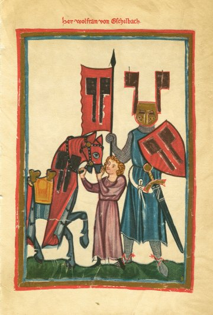
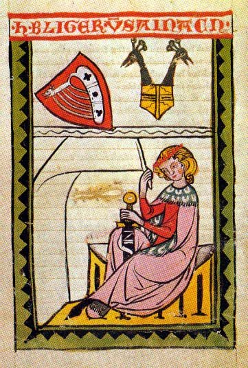
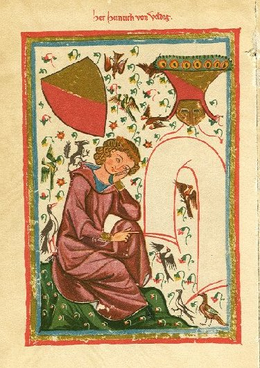
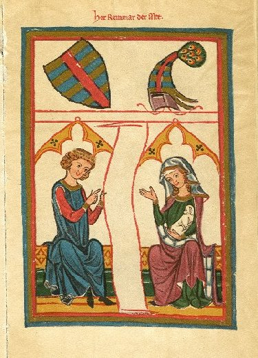
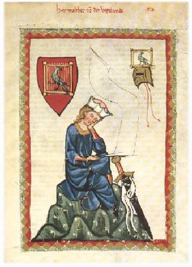

Hartman von Aue, oho, how he can spin words and sense together, inside and out, into a colorful story! How he can shape with words the contours of adventure! How transparent and pure is his every crystalline word, and may they ever remain so! His words approach you properly, they come right up close to you, a delight if you deserve them. Whoever can appreciate and understand good language will have to leave to Hartman the laurel he proudly wears.  Now, as to you who consorts with hares, skipping about on the word-heath, grazing between random leaps, and scattering words like dice, if you aim to lift that laurel when none agree you can do so, you'll have to let us cast our vote. We expect to be on the jury too. We, who help collect the blossoms with which that very prize wreath is woven through with floral color, want to know, why should you have it? Let whoever thinks to take it 4650 step right up and add his flower. Then we can judge from the blossoms whether they improve it so that we should take it from Hartman and settle it on the other's brow. But since as yet no one has come who has a better claim to it, so help you God, leave it there. We shall not let any wear it unless his words be well-polished, his delivery even and smooth, lest anyone passing over them upright and with level senses should stumble and be brought down. Hunters of wild tales, trackers of untame stories, who lie in wait with snares to entrap dull minds, who conjure gold from trifles just to please the children, and from a secret box pour dust that looks like pearls-- they shade us with a bare branch, not with may-green foliage spreading wide its canopy. The shadow they cast affords the guests but little relief for the eyes. If we tell the simple truth, no pleasure at all can come from this, nothing there delights the heart. Their prattle is the wrong color for noble hearts to enjoy. These same stalkers need to send out guides to go along with their stories. We're not able to understand them just by what we see and hear, and surely we don't have the time to look it all up in the black books.  There are other colorists: Bliker von Steinach-- his way with words is a delight, as though ladies embroidered them with golden and with silken strands, worthy to have interwoven a classical Greek border. He has the gift of words. They make such clean sense that sometimes I think fairies 4700 miraculously spun them and took them to their fountains to purify and wash them, so refined is his verse. His tongue, the bearer of his harp, has a double blessedness, one the word, the other, sense. These two together play their stories in rare harmony. Observe how this word magician here and there works wonders into the folds of his tapestry with the keenness of his tale, how he tosses off rhymes as skilfully as a knifethrower! He sticks rhymes to each other as though they had grown together. In fact, I even believe he wears book and letters instead of feathers in his cap, because when you catch sight of him his words are soaring like the eagle.
 Now whom else shall I select? There are and have been many, plentiful in word and sense. Henrik van Veldeke knew what he was doing. How well he sang of loving, how carefully he put his thoughts! I think he drew his wisdom straight from the Hippocrene, the source from which all wisdom came. I myself never knew him, but well I hear the best of those who in his day were masters and in the days since then. They award him the distinction of having planted the first sprout in the Teutonic language, from which wide branches sprang, then bursting into blossom, from which they drew the cleverness of masterly invention. Since then this artistry has spread to such extent and divided so freely that all who deal in words can take their pick there of blossoms and fresh shoots, of ways to say and sing. 4750 Of nightingales there are plenty whom I will not mention here, as not belonging in this flock. On their account I only say what I should, and always have: they all perform their office well, singing summer tunes very pleasingly, in voices ever pure and good. They bring high spirits to the world, pleasure going straight to the heart. We might live inattentively, unaware of what they do, except for their lovely caroling. It soon reminds any man whose thoughts have ever turned to love both of love itself, and goodness, and many sorts of courage that do the noble heart such good. It raises kindly inclinations, sets everyone to thinking deeply, this birdsong that we love so well, that soon repays the world's affection. --"So tell us of these nightingales!" Well they know what is expected, and well know how to sing and tell of all their yearning and sore pain.  Now which of them shall bear their standard, since Reinmar von Hagenouwe, the leading nightingale, has fallen silent for this world, who held the magic of all music sealed and hidden in his tongue? At that I often wonder deeply (by which I mean his melodies, so pleasing, so beautiful), where did he find so many tunes, and where does the marvel come from of their countless variations? I like to think Orpheus' tongue, that knew every melody, was singing from that mouth.  --"But now that we have him no longer, tell us what we are to do! Let someone well blessed with insight tell us, who now leads the flock? Who shall guide the company? Who can show the way?" I think I know, very well, who must now carry the banner, the master who knows best how to do it: 4800 Walther von der Vogelweide. Now, there's the nightingale whose song rings high across the meadow! What marvels it can do! What expert harmonizing! How fine its modulations (by this I mean in the mode we may call Cytheronian, where the Goddess Love rules without and within)! At that court it is chamberlain, it shall claim the leadership. And it can do so pleasingly, knowing well where to look for melodies of love. May it with its choir sing to such effect that they are able to convert the yearning pangs of the others, and may I live to see that day!